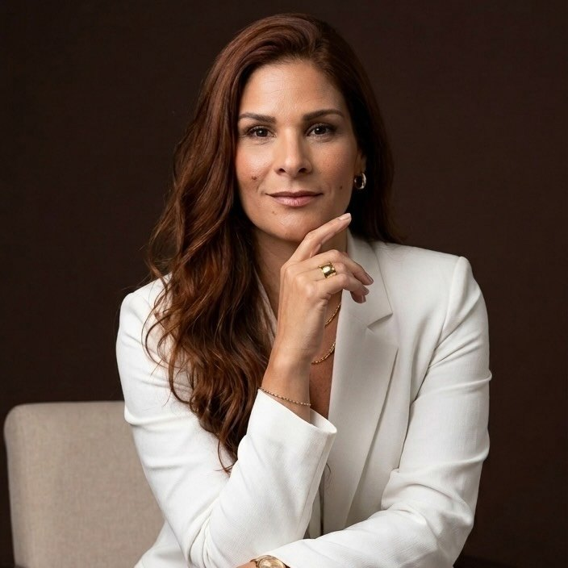
Colorista · Educadora · Cabo Frio, RJ
Amor em transformar cabelos.
Especialista em mechas e terapia capilar. Cada transformação começa com uma avaliação, para o resultado ser bonito e saudável.
- +54 mil acompanham no Instagram
- Mechas loiras, morenas e ruivas
- Terapia capilar com óleo e chá
- Cabo Frio no Rio de Janeiro
Transformações
Escolha a transformação ideal para você.
Cada cabelo tem uma história. A Amanda avalia o seu e indica a técnica que traz o resultado mais bonito, sem abrir mão da saúde dos fios.
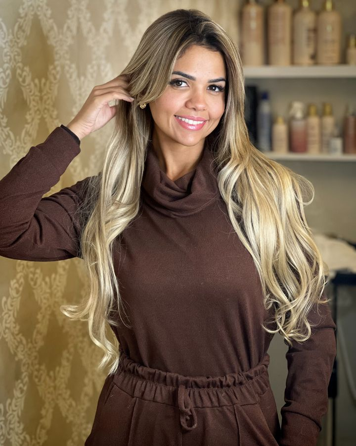
Loiros e mechasIluminados, contorno de luz e loiros cheios de dimensão.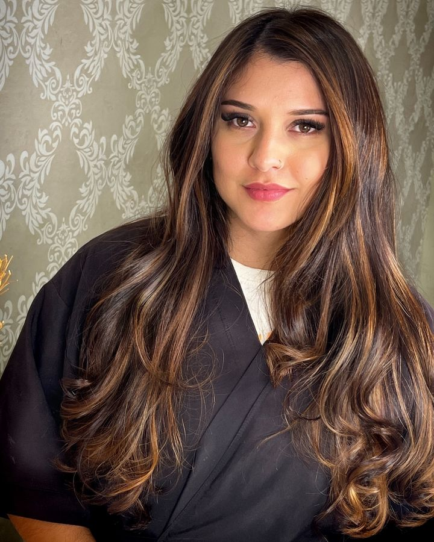
Morena iluminadaReflexos e brilho para cabelos escuros, como o dark chocolate com avelã.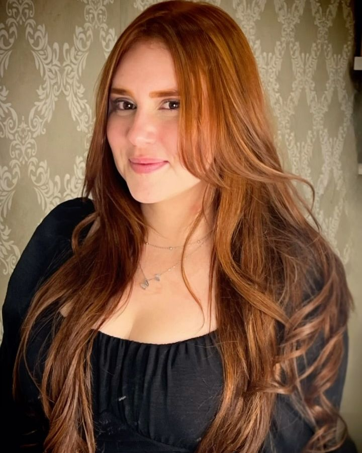
RuivosRuivo vibrante e luminoso, sem descoloração quando o seu cabelo permite.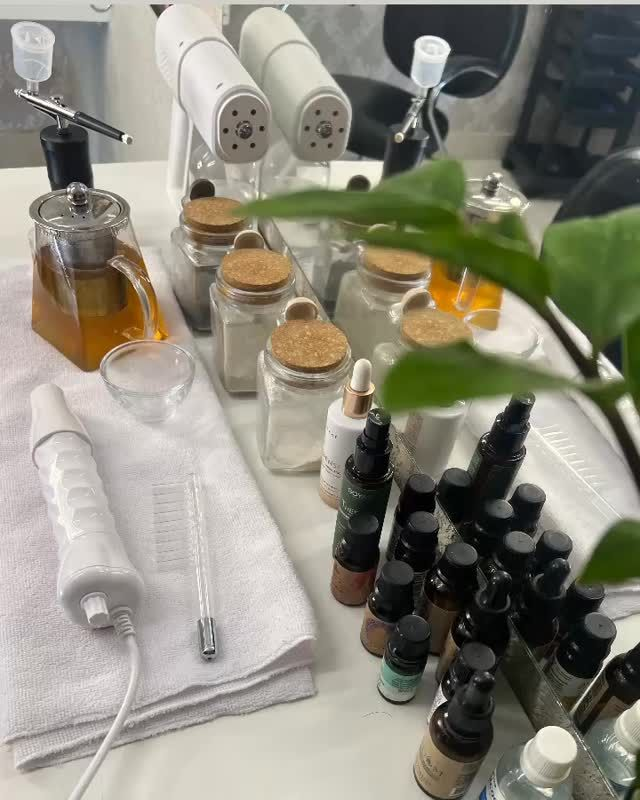
Terapia capilarÓleo Terapia e Chá Terapia para cuidar do couro cabeludo e dos fios.
Como funciona
A cor perfeita começa com um diagnóstico.
Antes de qualquer mecha, a Amanda avalia o seu cabelo para definir a melhor estratégia. Nem todo cabelo permite toda transformação, e é essa conversa que garante um resultado bonito e saudável.
- AvaliaçãoOlhar atento ao seu fio e ao seu couro cabeludo
- EstratégiaCor e técnica pensadas para você
- ExecuçãoTécnica cuidadosa, preservando a beleza dos fios
- CuidadoTerapia capilar para manter a saúde do cabelo
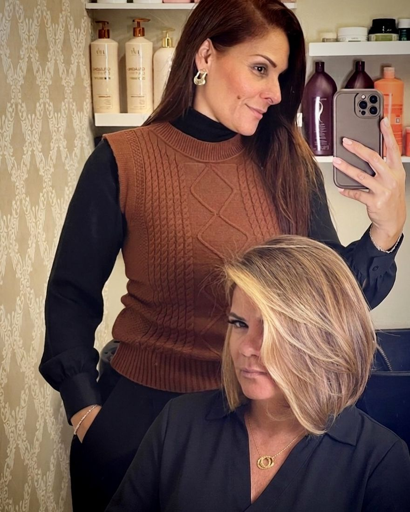
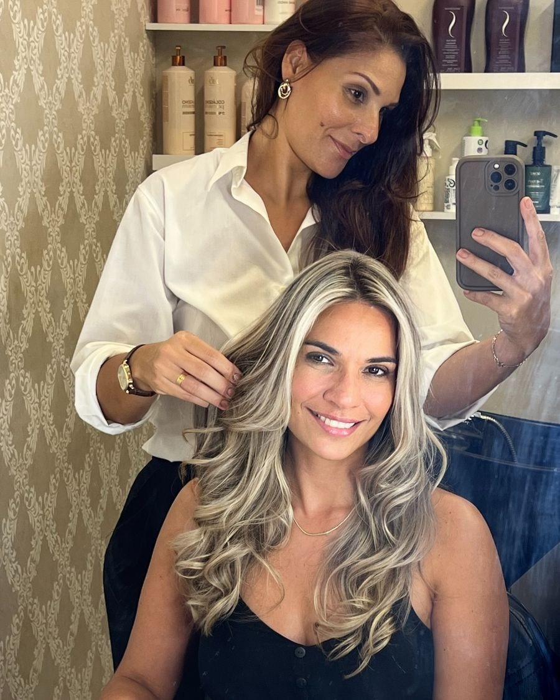
Sobre a Amanda
Mais que técnica: devolver a confiança.
Amanda Marins é colorista e educadora em Cabo Frio, no Rio de Janeiro. Especialista em mechas e terapia capilar, ela atende mulheres que querem mudar, cuidar ou simplesmente voltar a gostar do que veem no espelho.
“Nosso trabalho vai além da técnica. É revelar a beleza que já existe em cada mulher.”
Também é educadora. Quer aprender mechas ou terapia capilar? Conte o que procura e a Amanda responde com as opções.
Falar sobre aulasTransformações reais
Cabelos que mudaram. Mulheres que se enxergaram de novo.
Alguns resultados de clientes da Amanda em Cabo Frio.
Quero a minha transformação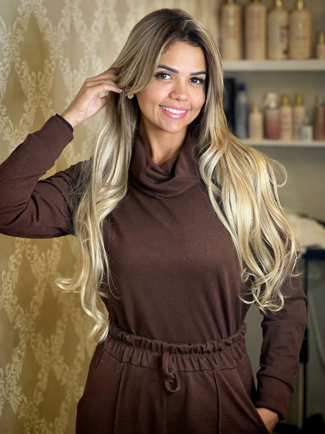
Glow blonde 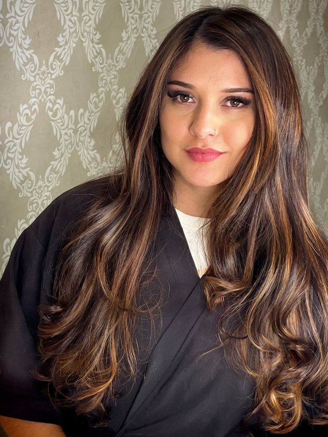
Dark chocolate com avelã 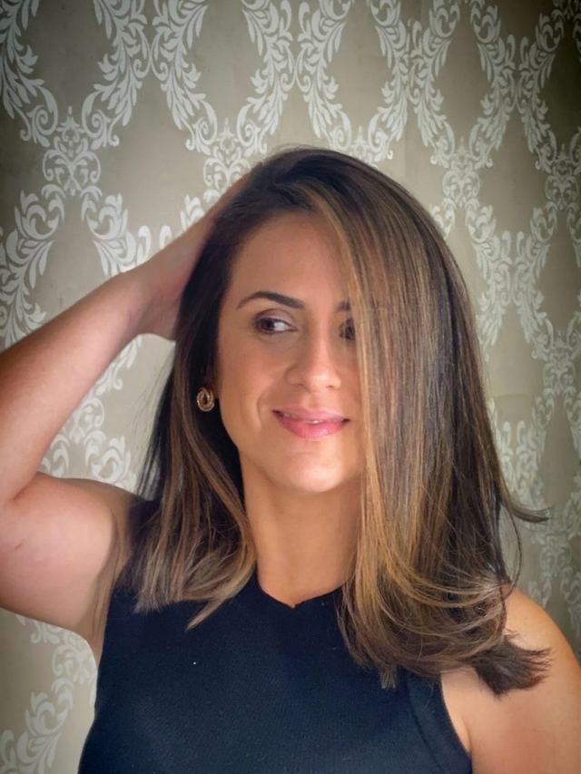
Morena iluminada 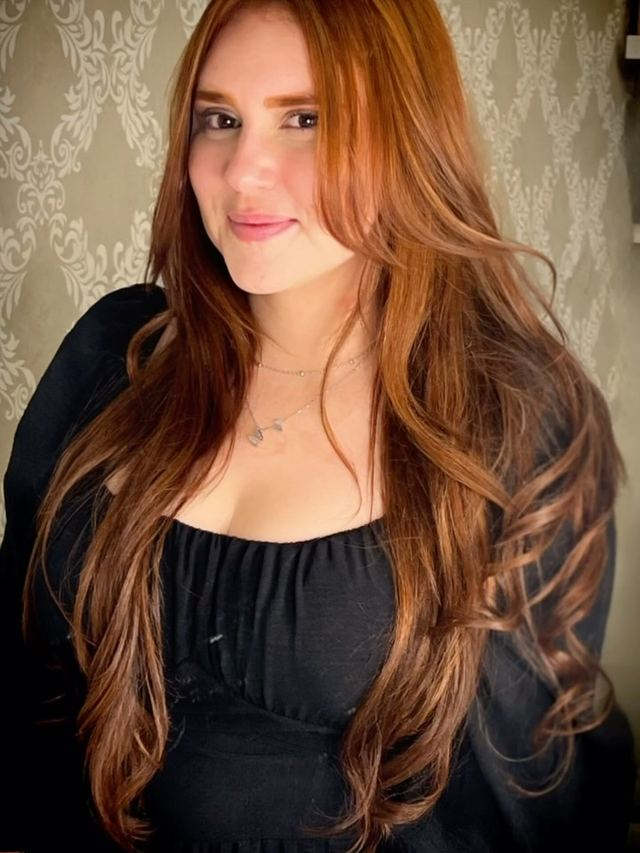
Ruivo vibrante 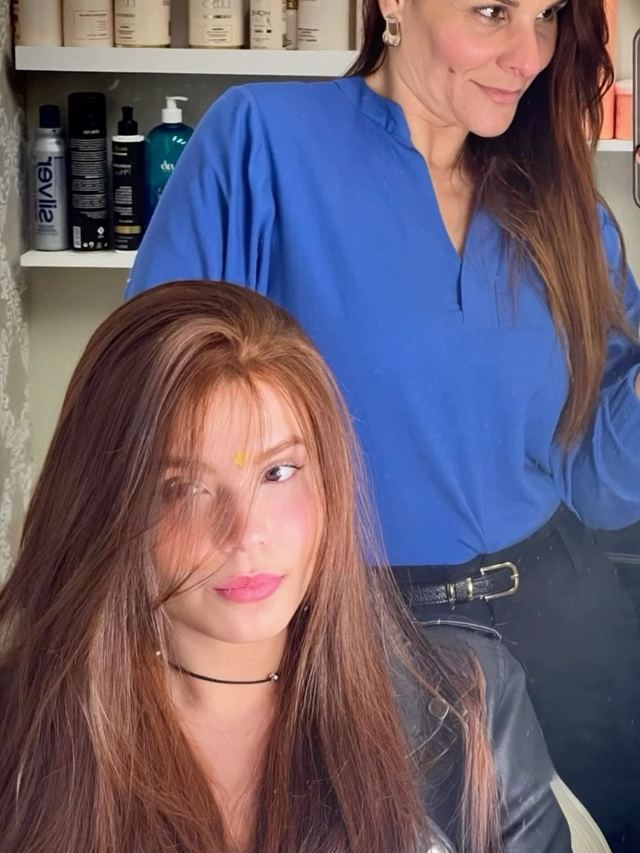
Ruivo sem descoloração
Explore os registros1 / 5
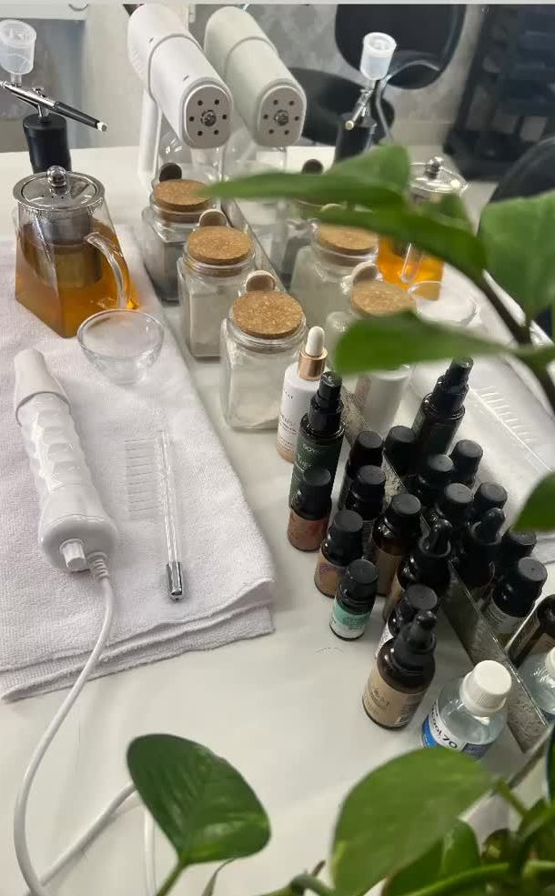
Agende com a Amanda
Conte o que você sonha para o seu cabelo.
A Amanda responde pelo WhatsApp para combinar sua avaliação e o melhor horário.